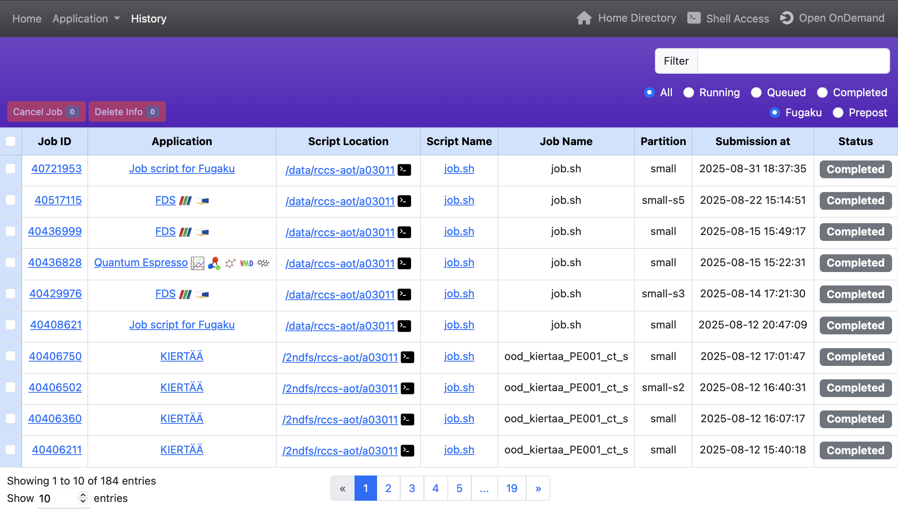

4. バッチジョブ
バッチジョブとは、ジョブスケジューラによって非対話的に実行される計算タスクのことです。
バッチジョブはシェルスクリプトで記述され、必要な計算資源（たとえばノード数や最大実行時間など）は、ジョブスケジューラのディレクティブ（例：#SBATCH -N 4）を用いて明示的に指定されます。
「富岳」Open OnDemandでは、Open OnDemand上で動作するアプリケーションであるOpen Composerを利用しており、
下記のバッチジョブのテンプレートを用意しています。
| Category | Application |
|---|---|
| Climate | SCALE |
| Computer Aided Engineering | FDS, FFVHC-ACE, FrontFlow (blue/X), FrontISTR, OpenFOAM (Foundation/OpenCFD) |
| Condensed Matter Physics | ALAMODE, AkaiKKR, HΦ, mVMC, OpenMX, PHASE/0, Quantum Espresso, SALMON |
| Experimental Data Processing | KIERTÄÄ |
| Molecular Dynamics | GENESIS, GROMACS, LAMMPS, MODYLAS, PIMD |
| Quantum Chemistry | ABINIT-MP, Gaussian, NTChem, SMASH |
| Quantum Simulation | braket |
| Other | Fujitsu TCS, Slurm |
例として、FDS（Fire Dynamics Simulator）の利用方法を説明します。メニューバーの「Batch Jobs」から「FDS」を選択します。
ジョブスクリプトを生成するためのWebフォームが表示されます。右上はアプリケーション共通の入力項目であり、「Script Location」はジョブスクリプトの保存場所、「Script Name」はジョブスクリプトのファイル名、「Job Name」はジョブの名前（省略可能）を指定します。左下はアプリケーション固有の入力項目であり、入力すると右下のジョブスクリプトが自動更新されます。入力後に「Submit」をクリックすると、「富岳」にジョブが投入されます。

ジョブが正常に投入されると上の方に表示される「History page」へのリンクをクリックします。

History pageでは、これまでに投入したジョブの履歴を閲覧することができます。テーブルの各行は1つのジョブの情報を示しています。
左上にある「Delete Job」と「Cancel Job」のボタンは、それぞれテーブルからジョブの情報を削除することと実行中のジョブのキャンセルを行います。 それらの動作を行うためには、テーブルの左端の列にある対応するチェックボックスをオンにする必要があります。
右上にあるテキストエリアとラジオボタンは、表に表示されるジョブをフィルタリングするために使用します。 「Filter」に文字列を入力すると、その文字列に関係するジョブだけが表示されます。 「All」、「Running」、「Queued」、「Completed」のラジオボタンはジョブの状態を表しており、その状態のジョブだけが表示されます。 「Fugaku」と「Prepost」のラジオボタンは、それぞれのシステムに投入したジョブだけが表示されます。
「Job ID」列のリンクをクリックすると、ジョブスケジューラから取得されたプロファイリング情報が表示されます。
「Application」列のリンクをクリックすると、そのアプリケーションページが開きます。そのリンクの横にあるアイコンは、Open OnDemandに登録されている可視化アプリケーションを表しています。クリックすると、そのアプリケーションを起動するためのWebフォームが起動します。
「Script Location」列のリンクをクリックすると、Open OnDemandのHome Directoryが起動します。また、その横のターミナルアイコンをクリックすると、Open OnDemandのShell Accessが起動します。


「Script Name」列のリンクをクリックすると、送信されたシェルスクリプトの内容を表示するウィンドウが開きます。そのウィンドウの「Load Parameters」ボタンをクリックすると、パラメータが読み込まれたアプリケーションのページが開きます。